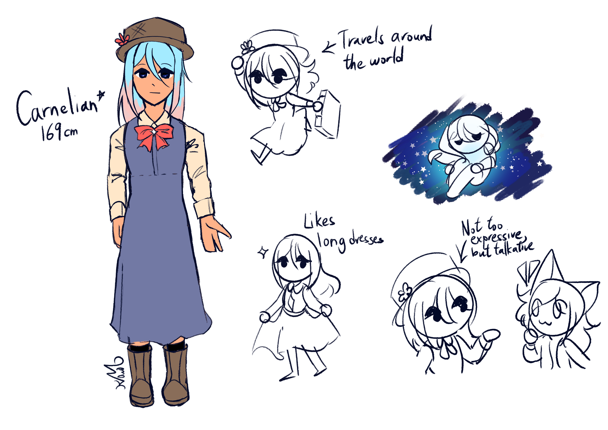

I'm a traveller from afar, where do you recommend to go?

Lore facts:
- She isn't very expressive, her face always looks blank
- She enjoys talking to friends and strangers, and is more humorous than she looks!
- Sometimes laments she should've started travelling way earlier, things pass by so quickly after all